Beyond the Sandbox
Building a Bulletproof Testing Suite with Storybook & Chromatic
Main Storybook use cases
- Isolated development
- Documentation
- Testing
Tests: Untapped potential
Storybook can do a lot more for you regarding testing:
- It cleverly integrates with the testing tools you know and love
- One UI as entrance point for all of your tools
- It can help you create comprehensive and reliable test suite
Recap: Testing
Testing Pyramid
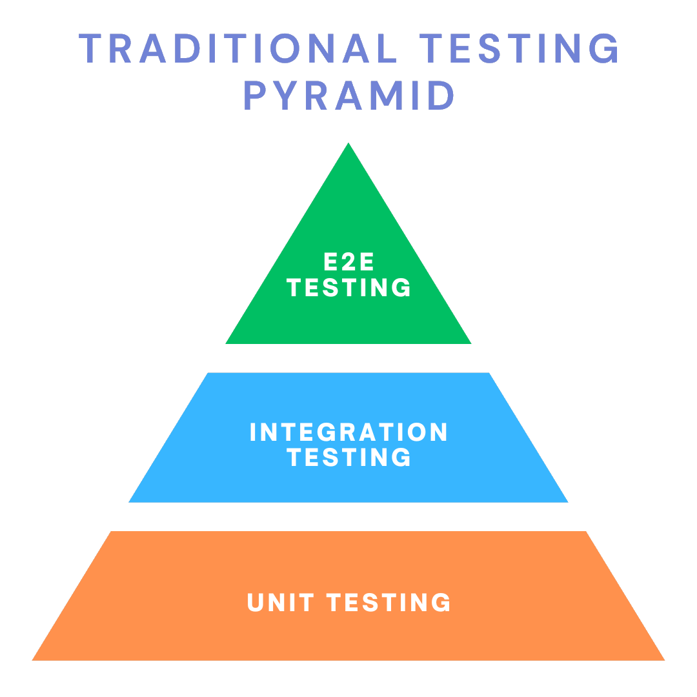
Testing Tools
Typical Testing Tools:
Jest, Testing Library, Vitest, Playwright, Istanbul, Cypress, Webdriver.io, Selenium, happy-dom
Why it's a pyramid?
Tests at the bottom are cheap and fast - we can and should create a lot of them
Often tradeoffs: precision vs velocity
The more we move up, the more expensive and slow they become
Shift-Lefting
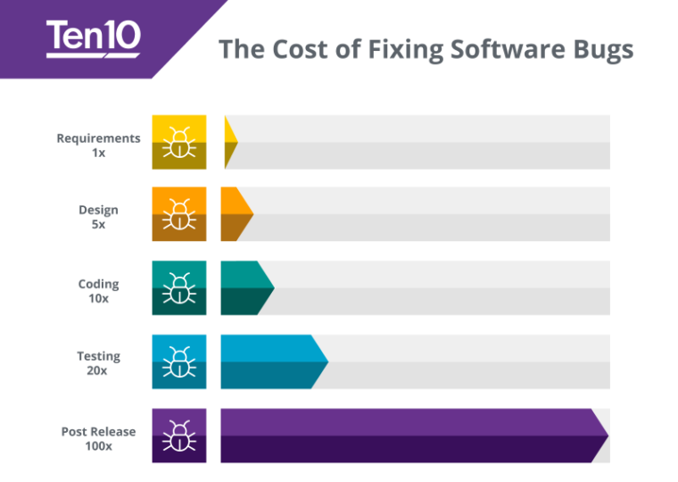
What is shift-lefting and why should we do this?
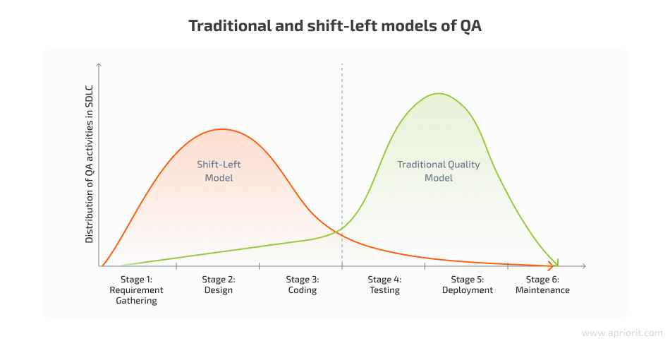
Shift-lefting - doing or considering things earlier in the process, not in the end
"A good plan is half the battle"
Advantages of shift-left approach
- Identify issues/bugs early
- Reduce development costs
- Improve product quality
- Prevent technical debt ("we will fix it later")
Testing with Storybook
Storybook at it's core
Story = interesting specific state of a component
It's kind of a test already!
Component is not only an atomic unit, you can and should compose everything bottom-up until the page level (component-driven development)
Storybook is addon-based
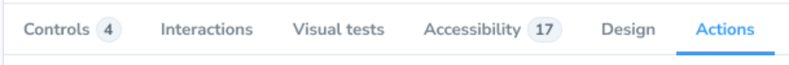
Controls tab
Controls Tab
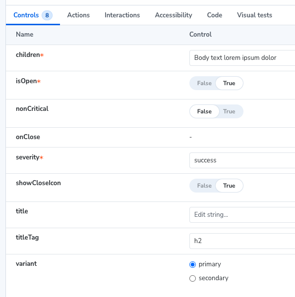
Controls Tab
- For manual, explorative tests
- Create a story if you find something interesting
- Don't forget the edge cases!
- Show and setup all of the properties
- Right controls for each property
Actions tab
Actions tab
- For manual callback tests
- Triggered actions will be logged with their arguments
- i.e. in React you can set it up with spy function fn()
Actions tab
import { fn } from 'storybook/test';
...
const meta = {
...
args: {
onClick: fn()
...
},
};
Actions tab
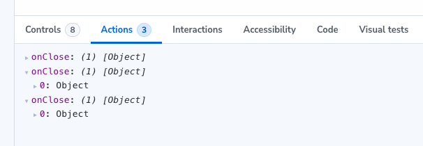
Interactions Tab
Interactions Tab
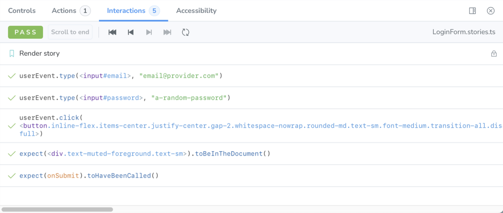
Implemented with so-called play functions
Interactions Tab
- Mainly for interaction tests, but very flexible
- Callback tests
- Accessibility tests
- Checking DOM structure
Interactions Tab
import { expect } from 'storybook/test';
export const ExampleStory: Story = {
play: async ({ canvas, userEvent }) => {
const myButton = canvas.getByRole('button');
await userEvent.click(myButton);
expect(myButton).toHaveClass('clicked');
},
};
AAA pattern:
- Arrange: canvas
- Act: userEvent
- Assert: expect
Interactions Tab
canvas - all query methods are taken from Testing Library (TL)
userEvent - companion library of TL
expect - combines methods from vitest + TL (jest-dom)
Interactions Tab

Accessibility Tab
Accessibility Tab
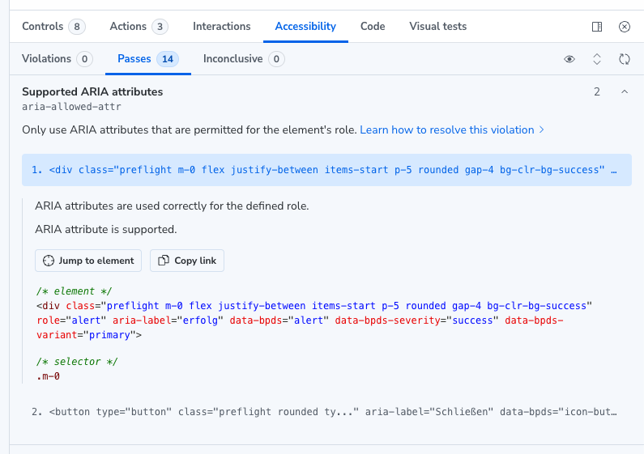
Accessibility Tests
Built on top of Deque's axe-core library
Automatically catches up to 57% of WCAG issues
Default rulesets can be adjusted (default: WCAG 2.0 + 2.1)
- WCAG 2.0 Level A & AA Rules
- WCAG 2.1 Level A & AA Rules
- Best Practices Rules
You can enable/disable individual rules as needed.
Putting it all together: Vitest addon
Vitest addon
Turns your stories into tests automatically
Consolidates various testing functionalities into a single addon
Thin wrapper (Vitest in browser mode with Playwright)
Real browser env instead of jsdom/happydom
Dedicated UI in Storybook + CLI
Vitest addon
- Checks if a story can be rendered (smoke test)
- Executes play functions (interaction tests)
- Runs a11y addon (accessibility tests)
- Creates visual snapshots (visual tests)
- Tells you how much of the code is covered (coverage reports)
Vitest Addon
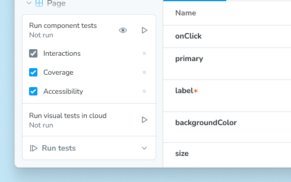
Vitest Addon
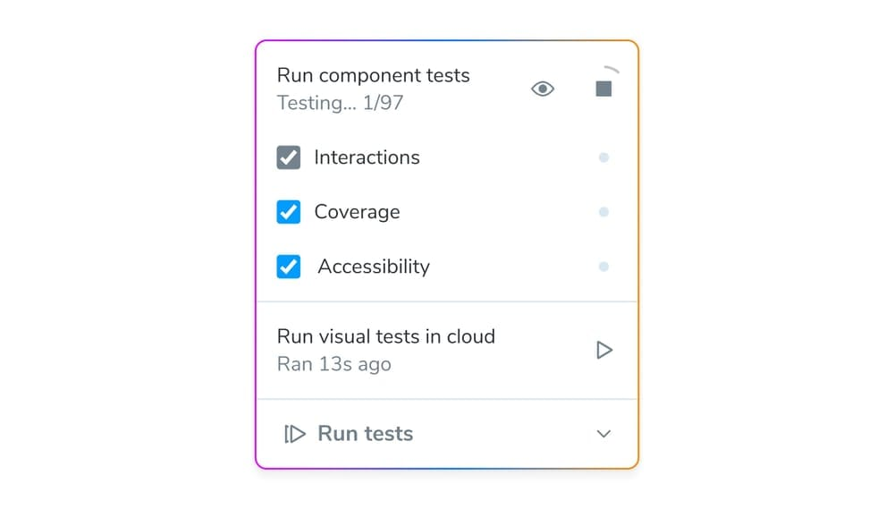
Vitest Addon
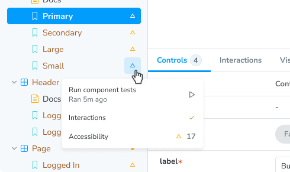
Vitest Addon
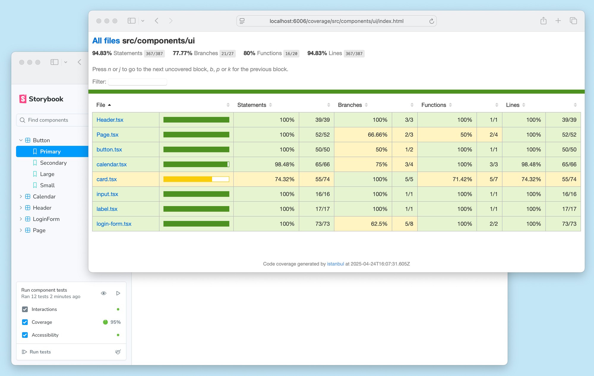
Vitest Addon
Can be automated in your CI/CD pipeline with CLI
{
"scripts": {
"test": "vitest",
"test-storybook": "vitest --project=storybook"
}
}
Visual Regression Tests
Visual regression tests
Create an image of known valid state (=Baseline)
After a change: create another image and compare it with the baseline
Uwanted change = regression
Visual regression tests
Visual regression tests
often underestimated
Main tool in your belt for QA'ing your design system!
👉 Gives you confidence to ship your UI without fear
👉 Help to greatly reduce the amount of your tests and assertions
Chromatic
Chromatic
SaaS for visual regression tests
by the team behind Storybook - best integration
covers four main browsers: Chrome, Firefox, Safari, Edge
Chromatic
Chromatic
Modes help you to deal with complexity of modern UIs:
- themes: light, dark, hight contrast
- viewports: mobile, tablet, desktop
- locales: different languages, RTL
You can snapshot all of the permutations you need!
Chromatic
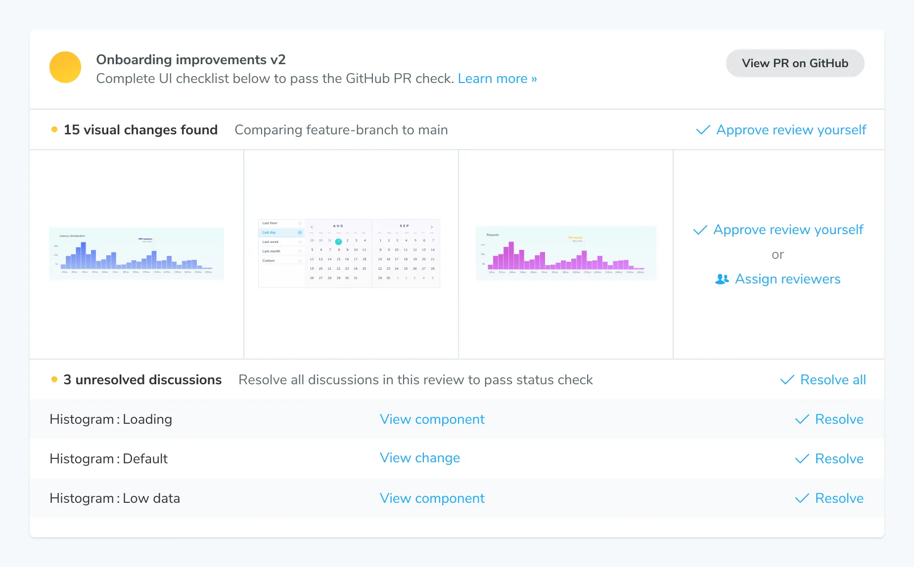
👉 Great for reviewing the changes and taking responsibility as designer
Chromatic
Chromatic should be integrated into your CI/CD pipeline (CLI) for automation:
- Chromatic CLI
- chromaui/action for Github Actions
Chromatic
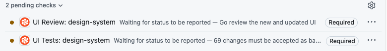
Trigger builds on push/PR creation automatically
Make the checks mandatory
Chromatic Storybook Addon
Chromatic Storybook Addon
- Shift-lefts visual testing into your local development
- Can be used to see regressions early and often
- Great for "step-by-step" implementations (between commits)
- Fully integrates in Storybook and vitest addon
- Accept/Reject changes directly in Storybook
Chromatic Storybook Addon
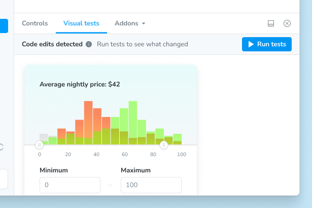
Chromatic Storybook Addon
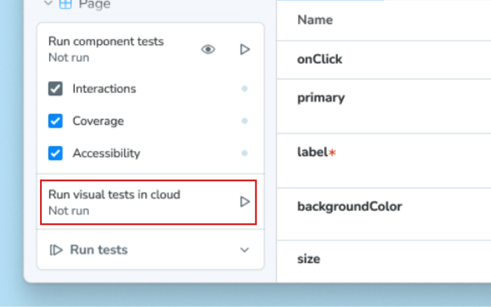
CI/CD Pipeline
Should be last check point for your QA activities
Test as much as possible and it them mandatory
👉 Build app, build storybook, lint, format, check typescript, secrets/vulnerabilities, all tests, Chromatic's UI Review/Tests, bundle size, etc.
Git Hooks
Run your tests before certain git events like commit or push
Shift-left your tests even more - earlier feedback, less bugs
Either supplements or even replaces CI/CD checks - less pipeline costs
Oftentimes a tradeoff - Hooks shouldn't run for too long
Resources
Summary
👉 Take responsibility for your product and build a test suite
👉 Shift-left whenever possible
How? Where CLI, there automation!
What? vitest addon + chromatic
Where? Git hooks + CI/CD pipeline